The Team


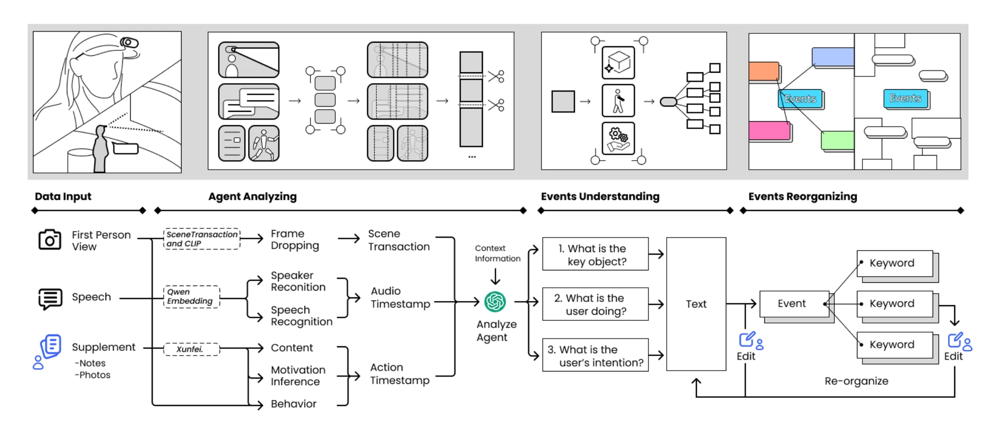
Xiangrong (Daniel) Zhu, Jingwei Sun, Yuan Xu, Huanyi Wan, Jiawen Zhang, Yancheng Cao, Liuxin Zhang, Yu Zhang, Qianying Wang, Xin Tong*
Human memory is inherently prone to fragmentation, especially when dealing with multimodal digital traces such as first-person video, ambient audio, photos, and sporadic notes. While existing AI systems struggle to infer personal significance in meaning-making, manual organization often imposes substantial cognitive burden on users. Investigating how human–AI collaborative systems can support personal memory meaning-making and enhance downstream memory tasks, we conducted three co-design workshops (N = 10) to identify critical barriers and derive actionable design guidelines. We then developed MemoryLib, a mixed-initiative interactive system that dynamically structures and interprets multimodal memories into event-centric concept maps and a semantic event graph through lightweight human–AI refinement. Controlled and four-month follow-up evaluations (N = 25; follow-up N = 12) demonstrated that MemoryLib significantly reduces factual errors and recall uncertainty while preserving subjective richness, user agency, and long-term reusability.
To ground the design space empirically, we conducted three co-design workshops with 10 interdisciplinary participants (P1–P10; 4 females, 6 males; age M = 24.2, SD = 1.62) using custom ideation cards across Information Modalities, Interaction Channels, User Motivations, and Agent Roles. Thematic analysis surfaced four persistent barriers in everyday memory work: disruptive in-situ capture that breaks immersion, high post-hoc annotation burden, fragmented cross-modal organization, and inefficient retrieval lacking structural semantics.
The workshops established a four-layer taxonomy of in-situ data underpinning meaning-making and an end-to-end human–AI collaborative workflow spanning Collection, Annotation, Organization, and Reuse & Revisit:
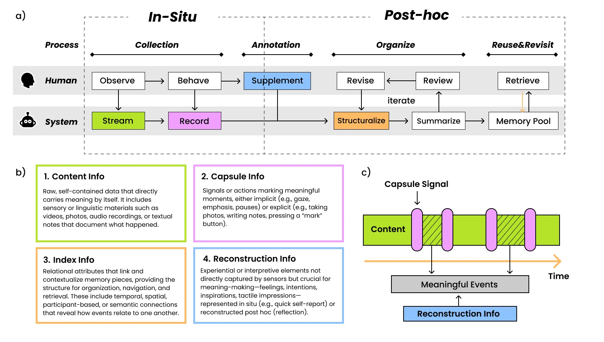
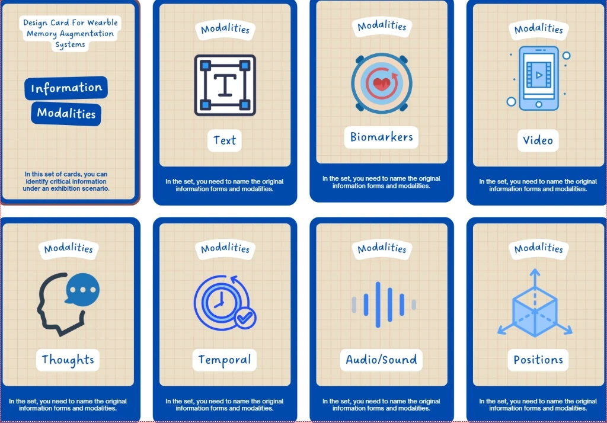
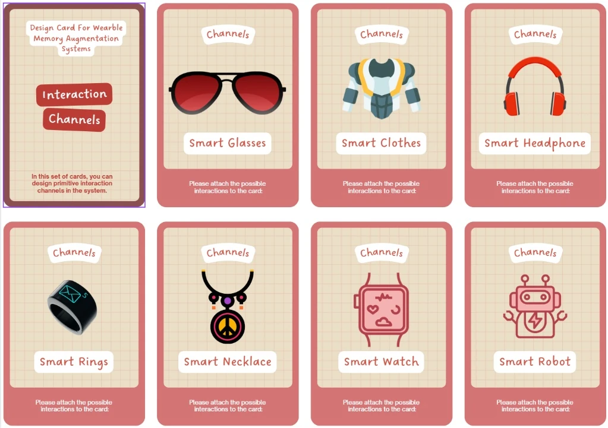
Synthesizing workshop insights with a motivating scenario, we formulated five design guidelines (DG1–DG5): minimize in-situ cognitive load via automated multimodal capture, bind raw traces into minimal manageable memory units, provide accurate semantic interpretations with user-driven manipulation, organize units in a structured and retrievable graph, and ensure semantic accuracy through low-effort human–AI confirmation loops.
Informed by episodic and semantic memory models and Event Segmentation Theory, MemoryLib organizes experience into discrete events—each acting as an event concept map—and links them in a JSON-backed semantic event graph across three system layers:
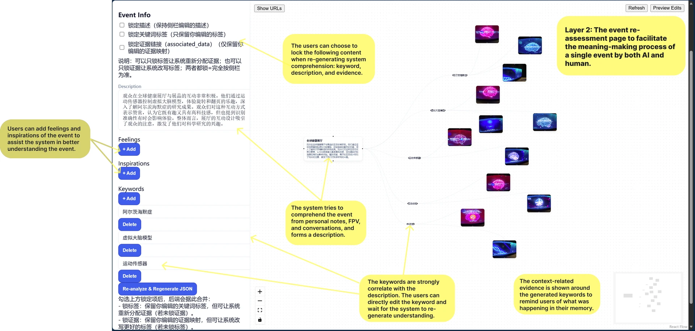
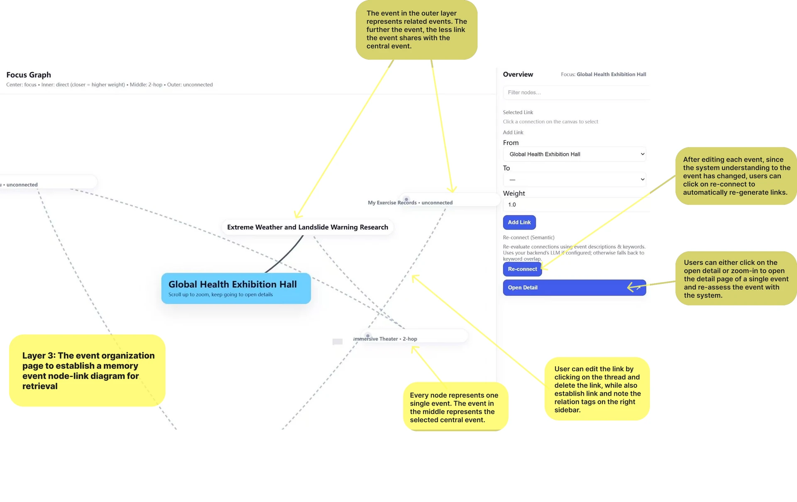
We conducted a within-subjects evaluation with 25 university students (P11–P35; ages 19–32, M = 23.6, SD = 4.2) at a university visitor center spanning eight thematic zones. In Session 1, participants wore a head-mounted camera during a 45-minute guided tour across six interest-selected exhibits (from a pool of ten) while freely capturing photos and notes. Three to five days later in Session 2, three exhibits were randomly assigned to a Baseline condition (organizing raw multimodal materials with familiar tools such as Notion, Google Docs, or ChatGPT) and three to MemoryLib (15 minutes per condition), followed by delayed oral recall, SUS, UEQ, NASA-TLX, an 18-item comparative questionnaire, and semi-structured interviews.
To isolate the long-term impact of human–AI co-construction from pure AI summarization, we ran a Session 3 follow-up study approximately four months later with 12 returning participants across three counterbalanced conditions: Human Baseline (raw personal materials only), AI Baseline (keyframe photos and descriptions generated by Gemini 3.0 Vision / Gemini 3.0 without graph structure or user edits), and MemoryLib.
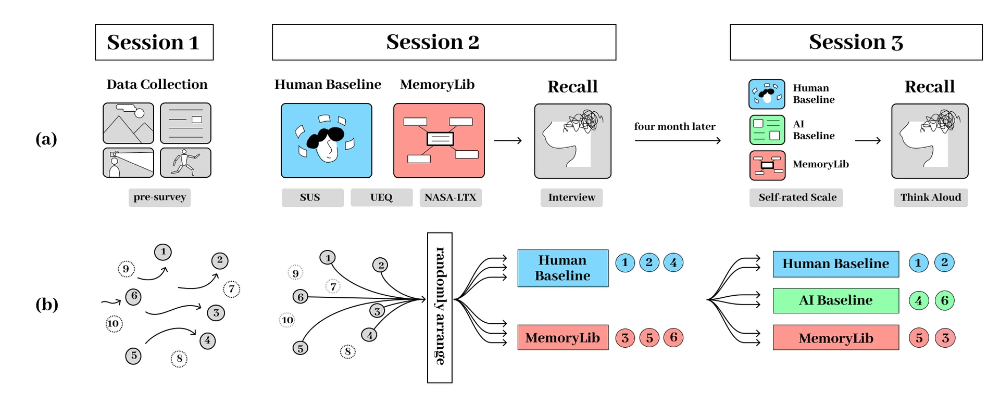
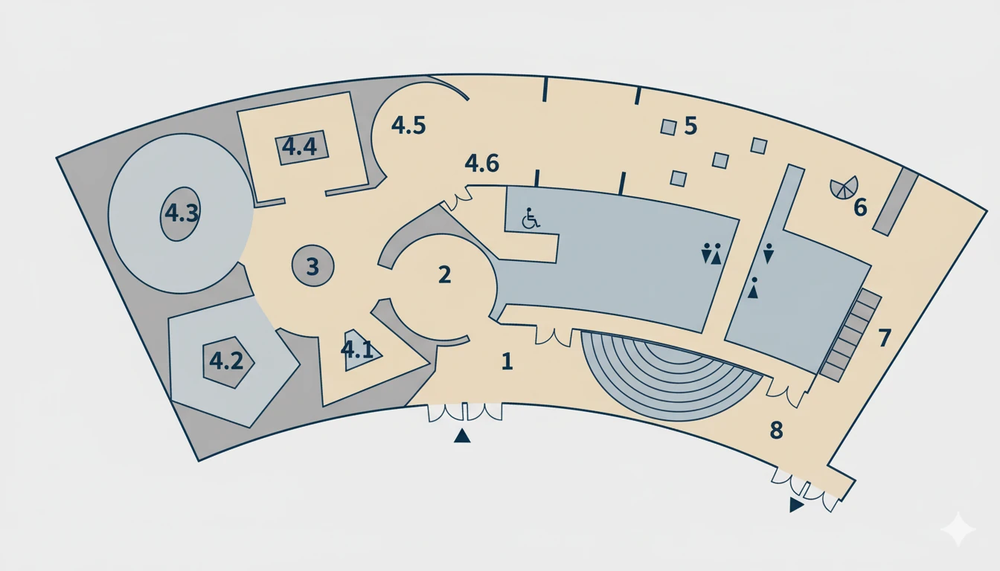
Short-Term Recall & Cognitive Workload (Session 2, N = 25): Blind-coded delayed recall transcripts showed that MemoryLib produced significantly fewer factual errors (ΔM = −0.43, p = 0.0019) and more subjective expressions (ΔM = +0.70, p = 0.0122) than the Baseline, with a downward trend in vague expressions (ΔM = −0.52, p = 0.0898). Participants rated MemoryLib significantly higher on Clarity of Structure (5.04 vs. 6.04, p = 0.0011), Event Relations (5.16 vs. 6.00, p = 0.0064), Completeness of Recall (4.16 vs. 5.64, p = 0.0005), Reusability (5.08 vs. 6.12, p = 0.0001), and Memory Recall Fluency (4.04 vs. 5.60, p = 0.0019). Overall NASA-TLX workload remained moderate (M = 48.7, SD = 11.8), with 20 participants describing the system as lightweight and 19 willing to maintain this interaction effort in daily use.
Long-Term Retention & Agency (Session 3 Follow-Up, N = 12): Four months later, the fully automated AI Baseline produced the highest factual errors (M = 2.67 ± 1.44)—significantly more than both MemoryLib (M = 0.67 ± 0.78, p < 0.001) and Human Baseline (M = 1.17 ± 0.94, p < 0.01)—and suffered from significantly lower subjective expression (M = 1.83 ± 0.94) than both MemoryLib (M = 3.33 ± 1.30, p < 0.001) and Human Baseline (M = 3.25 ± 1.14, p < 0.001). MemoryLib achieved the lowest recall uncertainty (M = 1.58 ± 0.79 vs. Human 4.08 ± 0.90, p < 0.001; AI 2.42 ± 0.90, p = 0.027) while outperforming AI Baseline on Trust (p = 0.0059), Emotional Recall (p = 0.0117; vs. Human p = 0.0059), Reusability (p = 0.0469; vs. Human p = 0.0029), and Sense of Control (p = 0.0029; vs. Human p = 0.0103).
Systematic LLM Misalignment Patterns: Qualitative error analysis surfaced three recurrent failure modes in unverified AI memory outputs—misinterpretation of intent and social context, factual object and temporal errors, and semantic/affective hallucinations—which led 9 of 12 follow-up participants to doubt or misremember events under the AI Baseline. Concept-level human–AI co-construction in MemoryLib mitigated these hallucinations while preserving autobiographical trust.
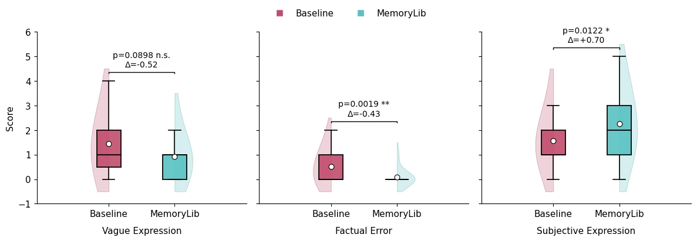
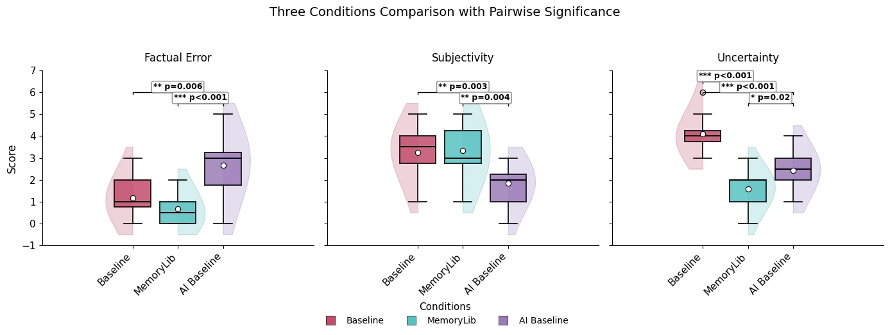
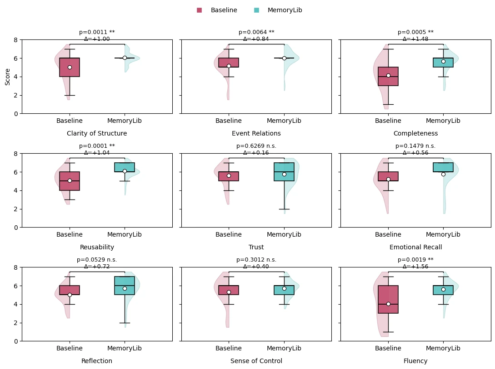
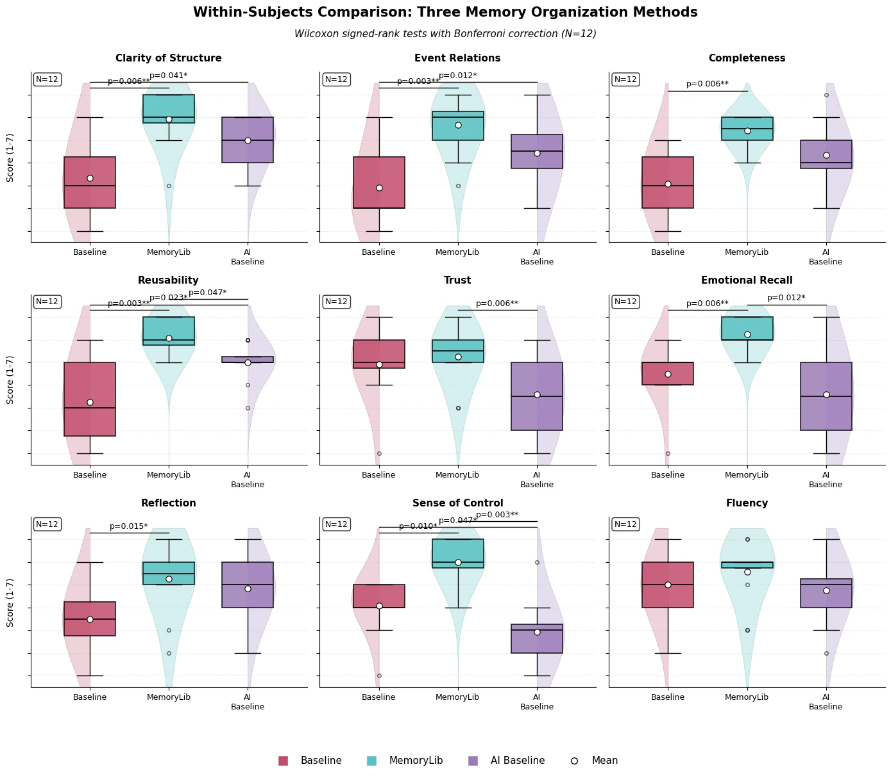